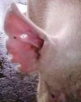
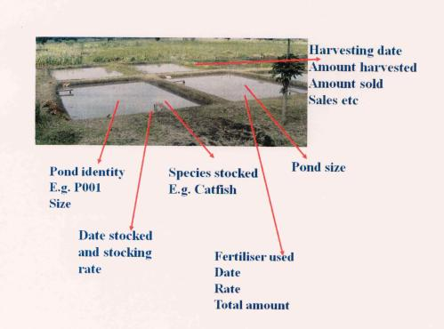

Record keeping
{kind=link}
Introduction
What is it to 'keep records'?
To keep records is simply to collect relevant information that can help you to take good decisions and to keep track of activities, production and important events on a farm. Records can be about any performance of the animals, economic development, or any activity of the farmer or veterinarian. It is important to keep record keeping simple, and to keep records systematic. If records should be of use for the farmer, than they must be complete (none missing), they should be true (collected carefully). When record can't be trusted because they are not complete or true, time should not be spent on it at all.
The records can:
- Be used in determining profitability of various techniques used at the farm
- Be used to keep your memory on what you did and/or what happened
- Be used in decision making, especially on a strategic level
- Be used to compare the efficiency of use of inputs, such as land, labour and capital, for example when implementing a new / alternative systems
- Help the farmer / investor in improving the efficiency of farm's operations
The real value is to support the farmer and the advisors to keep track and take decisions. Too often, records are only kept for the purpose of official reporting, e.g. to the Ministry headquarters for the parasitical and not used as a tool on the farm/ranch for making the decision in time.
The records should be simple, easy and quick to interpret, and then they can be supplemented with remarks which can explain some unusual events or findings.
What can records be used for?
If a farmer wants to build a financially successful livestock enterprise, record keeping is a must. The records can be used to further develop the farm and the herd, and thereby the sector in the country. For many farmers, it helps to think of their farm as a business, and to see that good care and good management actually also influences the production and profitability of the farm.
Records are important in (animal) farming because:
- To keep track of all animals (Identification records)
- Evaluation of livestock for selection (breeding records; financial records; production records)
- Control of inbreeding and aid in breeding planning (breeding records)
- Aid in selecting animals with the right characteristics for breeding (production, health, feed efficiency) to improve the herd or flock
- To rationalize labour
- Aids in feed planning and management
- Aids in disease management; keeping track about treatment (disease records)
- Aids in finding the effective treatments
- To assess profitability/losses (financial records)
- Improves bargaining power on products, because you can see the investment and the price of the production (financial records)
- Credit/loan access (financial records)
Types of Records
The major types of records which are all described below:
1. Identification
2. Breeding
3. Production
4. Feeding
5. Disease and treatment records
6. Financial records
1. Identification Records
- An identification method should be cheap, not harming the animal,reliable to read at a distance of at least 2-3 metres and by preference be permanent.
- Identification of the animals is of course not necessary if a farm has only one animal of a certain species, sex and age group.
- Identification of animals is usually through use of numbering, by marking of the animal and by description of certain characteristics of the animal. The latter is the most animal friendly, and can be done in practice by drawing e.g. the different color spots of the animals, or certain cowlicks, or taking photos. Giving the animals names and keeping a table with the characteristics of the animal and link it to the name can work in many cases.
- Intrusive methods of identification can be subdivided into 2 categories: permanent at the animal itself (which affect the animals most when doing it) and non-permanent.
a) Permanent Identification
- Tattooing (ear or under)
- Brand (Hot iron, freeze and chemicals)
- Ear-notching, Punching
- Tags (Ear-tags, Flank-tags, tail-tags and Brisket-tags; permanent if they do not fall off)
b) Non-Permanent identification
- Collars or neck or leg straps (chains)
- Paint and dyes (can be very animal friendly, but if the paint is full of chemicals it is not healthy and is not recommended, please check)
2. Breeding Records
The importance of breeding records is to measure the productive efficiency of the herd and to enable selection. For example, many farmers would like a cow or a goat which gives birth yearly, or a sow 2 litters per year. Therefore, an accurate up-to-date breeding record of each individual female is necessary. An indicator for fertility/efficiency of mating or inseminations is e. g the number of matings or inseminations needed to get an animal pregnant.
If many matings or inseminations are needed, it can indicate that there is a problem with the female or the male, or it can indicate that the observation of the heats is not efficient, or the semen, the technique of insemination is insufficient, or the feeding is imbalanced. If the cow is taken to a bull, it can be the cow or the bull which has a problem. Data for insemination or service with a male also is needed to be reminded when the female should be prepared before giving birth, e.g. like in the cow's case, to be dried off in time.
The most important data in breeding records include:
- Pedigree/parentage (name or other identification of parents and grand parents)
- Fertility (dates of all services (this also allows calculating the number of services per conception), dates of giving birth (allows to calculate the age of first calving/giving birth and the period between successive birth)
- Birth details (number and weight of newborns, was assistance necessary? Stillborn / perinatal deaths / vitality score)
3. Production Records
These records are useful in measuring the performance of the animals and the herd. It contributes greatly to the economic appraisal of the enterprise. It can help farmers take decisions on investments, based on how many animals produce how much on the farm, so how much surplus can the family expect?
The records can also be used by the whole sector to improve the genetics of the animals in the country, with specific focus on the production.
Production records are kept of:
- Animal products like eggs per hen per week and milk per cow per day in combination with milk quality data, and of
- Animals which are slaughtered, in terms of for example weight, weaning age and weight, daily gain, production period, and how many animals e.g. per litter reached slaughtering.
Production records are also necessary when farmers start selling products together, to know how much is available every day or every week or in a certain period.
4. Feeding Records
Feeding records give information about the amount, type and quality of the feed.
Feeding records can be used both for day to day management and adjustment of the feed ration. Together with the production data, it can for example be used to adjust if a milking cow needs more concentrate, or help in decisions about examining animals which seem to not grow, but still eat very much. It can also be used for planning of activities related to feed conservation and establishment of grazing areas in the following season.
The important feeding records are:
- Produced and available fodder on farm; quantity and if possible quality of the different feeds. Including content of energy, protein and minerals
- A feeding plan which tells how much feed is required per day per animal in different age groups (grown-ups, newborn, pregnant the first time etc.) or per group of animals (hens):
- Left-over feed if any (per head and per feed, if possible)
- Spoilage (per batch)
5. Disease and treatment records
Disease and treatment records are necessary to keep track of the disease events in which each animal is involved during its lifetime. This can guide to better management practices by leading the attention to repeated events or certain vulnerable groups of animals over time (e.g. it can show how animals almost always need disease treatments during weaning). It provides information about the health status of each individual animal and the whole heard, and it can help ensuring important vaccinations given at the right time.
On basis of the disease and treatment records, success of interventions both for prevention and treatment can also be evaluated.
After treatment with dewormers, acaricides and antibiotics and other medicines, milk, eggs and meat cannot be eaten by humans for some time. The records are essential for keeping track of this, e.g. when this withdrawal time is over. In organic animal husbandry, the withdrawal time is normally longer than the ordinary withdrawal time (double, or three times)
Disease and treatment records can for example involve:
- Disease occurrence and date
- All handlings to cure diseases (also non chemical treatment)
- Vaccination
- Dipping/spraying
- Treatment
- De-worming
- Postmortem
6. Financial Records
The records of the costs and earnings related to the animal farming be kept for cash analysis and enterprise appraisal.
In most households, the most necessary records are simple overview over the family cash flow, that is, the total economy in the household: what comes in? and what do we buy?
In addition to this, keeping records of the animal enterprises is and important part, because it can show whether it gives an income to the family or not. If records are kept particularly for the animal herd as an income generating commodities, it will help the family to see what they invest in it, and what it costs to produce it. Also in relation to the animal farm, an investment is more than an expenditure, an investment hopefully enables and improves the production in the future. It is also important to count approximately how many hours of work it has taken in the animal herd, because it can help price setting.
Economic records are of paramount interest in providing the farmer with information concerning the profitability of his farm. Moreover they are of great help in decision making at the right time. For example, is it profitable to feed concentrates, is it advisable to apply for a loan or credit to invest in a machinery or technology?
Answering these questions is only possible if adequate records are available. Moreover, for tax purposes and for the purpose of getting loans or credit, economic records are required.
Record keeping for Cattle production
Excellent records are the cornerstone of building a financially successful beef/Dairy enterprise and they will be of great help in the development of the Beef/dairy husbandry and beef/dairy industry of any country. In summary, the importance of good record keeping include:
- Aids in efficient management of the herd
- Improves bargaining power on products
- Evaluation of livestock for selection
- Adding value to livestock
- Control of inbreeding and aid in breeding planning
- Aid in culling low performers
- To assess profitability/losses
- Aid in gross margin analysis
- Credit/loan access
- To rationalize labour
- Aids in disease management
- Aids in feed planning and management
Types of Records
The major types of records are:
- Physical (identification)
- Breeding
- Production (Performance)
- Feeding
- Health
- Financial records
1. Identification Records
The needs are for an identification method that is cheap, not damaging to the animal and reliable at a distance of at least 2-3 metres and by preference permanent.
Identification of animals is usually through use of numbering, by marking of the animal and by description of certain characteristics of the animal. Methods of identification can be subdivided into 2 categories: permanent and non-permanent.
a) Permanent Identification
- Tattooing (ear or under)
- Description (diagrams, sketches and photographs)
- Ear-notching/Punching
- Brands (Hot iron, freeze and chemicals)
b) Non-Permanent identification
- Tags (Ear-tags, Flank-tags, tail-tags and Brisket-tags)
- Collars or neck straps (chains)
- Paint and dyes
- Hair Braiding
- Naming
2. Breeding Records
The importance of breeding is to measure the productive efficiency of the herd and to enable culling and selection exercise to be carried out for breeding and genetic improvement. A good farmer would like a cow which gives a calf yearly. Therefore, an accurate breeding record of each individual cow which is up-to-date is needed and also a breeding record for the total herd. An indicator for that is e. g the number of inseminations needed to get a cow in calf. In addition to this, the data for the breeding record provides information about when certain cows have to be dried off and when certain cows are due to calve while others need to be insemination for proper herd management. The important data in breeding records include:
- Pedigree/parentage (Dam name, grand dam, sire name, grand sire)
- Growth (Date of birth, birth weight, date of weaning, weaning weight, sale weight, sale date)
- Fertility (Age at first service, age at first calving, date of calving, number of services per conception)
3. Production (Performance) Records
- Daily milk yield
- Milk content (Butter fat content, protein, Solid Non Fat)
- Lactation length
- Milk fed to calves
- Milk consumed at home
- Milk sold
- Milk spoilt
4. Feeding Records
These should indicate the amount of feeding given as well as the type of feed. Feeding records should be used the most for day-to-day management, evaluating pasture management practices and for planning of activities in the future. The day to day management decisions which are to be made are for instance, which cows need concentrates and how much, cows to be culled and why etc. Thus the important records are:
- Available fodder on farm
- Quantity fed
- Concentrate supplemented
- Minerals
- Left-over ( per head and per feed, if possible)
- Spoilage (per batch)
5. Health records
Health records are needed to do the required vaccinations at the right time and to prevent disasters like foot and moth epidemic. They also provide information about the health status of each individual animal and the whole heard. Only with the breeding and health records can a good and wise decision be made.
- Vaccination
- Dipping/spraying
- Treatment
- De-worming
- Postmortem
6. Financial Records
For example, is it profitable to feed concentrates, is it advisable to apply for a loan or credit to invest in a machinery or technology, is it more economic to raise the calves with whole or skimmed milk? Answering these questions is only possible if adequate records are available. Moreover, for tax purposes and for the purpose of getting loans or credit, economic records are required.
Record keeping for disease management
1. Calf management and disease control records sheet
| Calf identification Number | . | Sire Number | . | |||
| Date of birth | Dam Number | |||||
| sex | ||||||
| Kg | Date | Remarks | date | |||
| Birth weight | 1st insemination | |||||
| Weaning weight | 2nd insemination | |||||
| Age and breeding weight | Date due to calf | |||||
| Average pre weaning growth rate (grams) | Bull used | |||||
| Average post weaning growth rate (grams) | ||||||
| Body condition score | Vaccinations |
2. Cow cards for planned fertility management
| Cow No. | ||||
| Last calving date | Date of vet examination | Examination remarks e.g. pregnancy diagnosis | Service date | Expected calving date |
| . | . | . | . | . |
| . | . | . | . | . |
| . | . | . | . | . |
| . | . | . | . | . |
| . | . | . | . | . |
| . | . | . | . | . |
| . | . | . | . | . |
| . | . | . | . | . |
3. Disease occurrence and treatment record sheet
| Date | Animal no. | Kind of disease | treatment | Remarks |
| . | . | . | . | . |
| . | . | . | . | . |
| . | . | . | . | . |
| . | . | . | . | . |
| . | . | . | . | . |
| . | . | . | . | . |
| . | . | . | . | . |
4. Mastitis management and treatment record sheet
| Farm code | 1st treatment | 2nd Treatment | 3rd treatment | 4th treatment | ||||||||
| Cow no. | Quarter | Sample | Remarks | date | date | date | date | Sample results | ||||
| am | pm | am | pm | am | pm | am | pm | |||||
| . | . | . | . | . | . | . | . | . | . | |||
| . | . | . | . | . | . | . | . | . | . | |||
| . | . | . | . | . | . | . | . | . | . | |||
| . | . | . | . | . | . | . | . | . | . | |||
| . | . | . | . | . | . | . | . | . | . | |||
| . | . | . | . | . | . | . | . | . | . | |||
| . | . | . | . | . | . | . | . | . | . | |||
| . | . | . | . | . | . | . | . | . | . | |||
| . | . | . | . | . | . | . | . | . | . | . | ||
| . | . | . | . | . | . | . | . | . | . | . |
5. Vaccination records for planned disease control
| Date | Vaccination done | Type of vaccine and quantity | Remarks |
| . | . | . | . |
| . | . | . | . |
| . | . | . | . |
| . | . | . | . |
| . | . | . | . |
| . | . | . | . |
| . | . | . | . |
| . | . | . | . |
| . | . | . | . |
| . | . | . | . |
6. Deworming records for planned disease control
| Date | Deworming done | Type of drug and quantity | Remarks |
| . | . | . | . |
| . | . | . | . |
| . | . | . | . |
| . | . | . | . |
| . | . | . | . |
| . | . | . | . |
| . | . | . | . |
| . | . | . | . |
| . | . | . | . |
Record keeping for Pig production
The prime objective of a pig farmer is to manage his farm in such a way that it is a continuing source of income. In order to achieve this he needs to implement a set of good management measures and technical skills through good record keeping and administration. This makes it possible to control and monitor production and reproduction activities and to identify the results both technical and financial.
Being able to identify the pigs is essential if records are to be kept and for managing the pigs accordingly. As long as you do not have large numbers of pigs there is no problem recognizing them and no need to worry about marking them. However, when you have more pigs it is needful to introduce an identification system. All the animals should be marked when they are young.
|  |
| Example of notching on the ears of a pig |
| (c) Stephen Gikonyo, Kenya
|
Notching step-by-step:
Catch the pig and secure it well.
Clean the ears with methylated spirit.
Clean the knife or pliers to be used for cutting with methylated spirit.
Cut off the edge of the ear flap on the parts of the ear that correspond to the number you want to give the pig
Apply some disinfectant like iodine, healing oil or wound spray to the cuts in the ear flap.
The picture on the left shows the right ear of an adult pig with notches, which were made when the pig was very young. The disadvantages of the method are that it takes time 'to read' the patterns (or codes), and that problems can arise if the ears are damaged.
 |
| Example of ear notching codes |
| (c) Stephen Gikonyo, Kenya
|
What does record keeping involve?
Good record keeping means noting down all important details and events, in a simple and clear manner. It can also be used to provide and record information for future activities. To keep records, use a notebook or exercise book. Dedicate a few pages for each pig, and a few pages for what you buy and what you sell. Other information should also be marked on a calendar (sow calendar), so that any necessary preparation can start well in advance (for example preparing the farrowing pen for the sow).
Records will help when comparing the production or growth of different animals. Records will indeed make it easier for you to carry out day to day activities on and for the pigs. When pigs are sick, you may note down the symptoms, the treatment, and whether the pig recovered or not. This will improve your knowledge on how to treat your animals successfully. It will also help you to keep track of expenses and incomes from sales. This information will tell you whether you are running a profitable business or not.
Records
- Litter records
- Birth weight (1.5.kg is good)
- Weaning weight (18kg is good) - Dams record
- Number of piglets weaned per year (18 is good) - Marketing
- Age and weight - Conversion rate
- Pigs that gain more weight from a given amount of food.
- A satisfactory conversion ratio should be 1 kg live weight gain for 3 to 5 kg of feed.
NB: Simple and necessary record should be kept for all piglets e.g. date of birth, dam and sire record, and weaning weight, feed type and feed consumption, decrease etc.
A good record keeping system will permit constant surveillance and monitoring of animal health and performance. It will assist the farmer in maintaining a steady flow of pigs through his enterprise and in identification of problem areas in the production programme.
Considerations to be made while designing a record keeping system
- The records should be as simple as possible
- Records should be kept in a place where they are readily accessible
- Transferring of information from one record sheet to another should be minimized
- The information that should be included in the records varies with the type of operation being run. A swine operation that is engaged in an expensive breeding stock improvement programme will require more detailed records and more individual pig records than will a commercial operation
- Individual records are of value in culling non-productive breeding stock and in selecting replacement animals
Individual records
- Sow identification
- Reproduction Records
Date of first Oestrus/heat, Breeding dates, Farrowing dates, Number of pigs born alive and number born dead, Average birth weight (comments on evenness of litter should be included) ,Abnormalities - Weaning Records
Weaning date, weaning weight - Litter management records
Dates of routine management practices e.g. Iron treatment, castration - Health Records
A record sheet summarizing important aspects of herd production on weekly or monthly basis should be kept. The farmer can compare these records which are a good measure of production efficiency with previous figures as well as with production goals he has set for his production.
Herd records should include:
- Reproduction Records
- Females services (categorise as to the first and repeat breeders).
- Litters farrowed
- Pigs born alive and number born dead
- Feed Consumed
- Either herd total or by ration i.e dry sow, starter finisher etc
- Pigs marketed (sows, boars, market or breeding stock)
- Pigs added (breeding stock from outside the herd)
- Market Information
- Age at marketing of at least a sample number of pigs and their weight
- Carcass indices of pigs marketed.
The data above can used to compute the following parameters:
- Average litter size born and weight
- Average litter size weaned and weight
- Percentage of pigs born dead
- Percentage death loss in any category
- Repeat breeding as a percentage of the total breeding
- Feed conversion ratio (fcr), - Average daily gain (adg)
- Average market index
NB:
- The above indicators tell how well the production programme is managed.
- The secret to the success of any record keeping system is not the particular design of the system but rather regular manner in which the records are kept.
Record keeping for Fish Farming/ aquaculture
Good records will, for example;
- Be useful in projection of expected production
- Be useful in determining the amount of inputs requirements for specific ponds at various stages of production
- Be useful determine the expected harvesting time
- Determine the financial health of the enterprise
|  |
| Record parameters in aquaculture |
| (c) Mbugua Mwangi, Kenya
|
Important record parameters in aquaculture include:
- Total area under culture
- Individual pond identity
- Individual pond treatments
- Stocking densities and time of stocking
- Species stocked
- Kinds, quantities and cost of inputs used
- Pond productions in amounts and values
- Other productions and values
- Daily occurrences
Aquaculture records can be classified into:
- Daily records kept for input usage like feeds, fertilisers, labour and daily occurrence
- Occasional record which are kept for events that do not happen on daily basis. Such records would include:
- Specific pond production (Quantity and values) by species
- Costs of acquisition of inputs
- Cost incurred in new constructions or repairs
- Salaries (both in cash and in kind)
How much and how comprehensive kept records are, is dependent on:
- Level of investment; Complex investments require complex records
- Motivation of investor; Serious investors will have more comprehensive records
- Level of aquaculture management: Intensive operations will have more complex records as compared to semi intensive operations
- Skills of the investor (or manager); Well trained managers will keep better records
As the management levels rises, culture systems become more complex and so is the record keeping. This is the reason the farmer must think very carefully of what he needs to record.
Examples of aquaculture records
- Fish farming biological management records
- Financial management records
- Purchase of inputs
- Salary records
- Inventory of equipment
- Records on payment of rents and hire of equipment, machinery, services etc
- Occurrence book
It is very important for individual farmers to clearly know what they need record and the intended use of this. This will assist them in preparing the most effective way of capturing the needed information.
Pond management records
| Pond identity | . | . | . | . | . | . |
| Date | Type of input | Rage of usage | Total usage | Unit cost | Total cost | Remarks |
| . | . | . | . | . | . | . |
| . | . | . | . | . | . | . |
| . | . | . | . | . | . | . |
| . | . | . | . | . | . | . |
| . | . | . | . | . | . | . |
Stocking records
| Date | Pond identity | Size (m2) | Species | Source | Stocking rate | Average Weight | Total number /weight | Unit cost | Total cost |
| . | . | . | . | . | . | . | . | . | . |
| . | . | . | . | . | . | . | . | . | . |
| . | . | . | . | . | . | . | . | . | . |
| . | . | . | . | . | . | . | . | . | . |
| . | . | . | . | . | . | . | . | . | . |
Harvesting records
| Pond No. | Date | . | . | Amount sold | Amount consumed on farm | Amount given away | Payment in kind | Total value of produce | |||||
| Species harvested | Quantity harvested Kg | Quantity Kg | Unit Price Ksh/Kg | Total value Kshs | Quantity Kg | Value Kshs | Quantity Kg | Value Kshs | Quantity Kg | Value Kshs | |||
| . | . | . | . | . | . | . | . | . | . | . | . | . | . |
| . | . | . | . | . | . | . | . | . | . | . | . | . | . |
| . | . | . | . | . | . | . | . | . | . | . | . | . | . |
| . | . | . | . | . | . | . | . | . | . | . | . | . | . |
| . | . | . | . | . | . | . | . | . | . | . | . | . | . |
Cash flow records
| Cash inflow | Cash outflow | ||||||
| Date | Source | Amount | Comments | Date | Source | Amount | Comments |
| . | . | . | . | . | . | . | . |
| . | . | . | . | . | . | . | . |
| . | . | . | . | . | . | . | . |
| . | . | . | . | . | . | . | . |
Other records could include
- Salary records
- Inventory of equipment
- Records on payment of rents and hire of equipment, machinery, services etc
- Pond sampling records
Record keeping for Chicken production
Month _____________________________
No. Cocks ______________________________
No. of hens______________________________
| Date | Age(wks) | No. birds | Mortality | Feed | consumed Eggs | Sales | Remarks |
| . | . | . | . | . | . | . | . |
| . | . | . | . | . | . | . | . |
| . | . | . | . | . | . | . | . |
| . | . | . | . | . | . | . | . |
Records should be kept on all poultry noting their approximate age or time of hatching. Most hens under good management will start laying at 22-32 weeks of age. Keep records such as age at first egg and production over time. If egg production is delayed or drops suddenly check for housing condition, access to feed, water etc. However, when egg production drops gradually, it may be a sign of old age. Sell the older hens in the flock and replace them with young hens. If your costs for feed exceed the income from selling cocks and/or eggs, you may also consider selling birds, or reducing the amount of feed given.
All expenditures for feed or feed ingredients should be recorded carefully, noting quantities, price and date of purchase. If purchasing commercial feeds note the name of the seller/manufacturer and the time of purchase to keep track of poor quality feeds. Keep records of disease control activities such as type, price and date of vaccines and medication purchases.
Supplementary feed consumed on a daily or weekly basis should be noted for each flock housed separately. Sudden changes in feed intake may be the first indicators of poor health. Income from sale of eggs, cockerels or chickens should also be recorded. Gifts and consumption of eggs and birds by house hold members and others should also be noted.
Record keeping for Camel production
- By keeping records, a camel keeper can monitor the camel herd in terms of trends which are occurring. This is important for planning.
- Records provide information which can be used to make decisions on future management of the herd in terms of when to breed, which camels to keep and which ones to sell, when to market and the quantities of products and income which may be expected, among other information
- Records help the camel keeper in doing economic analysis in order to assess the profitability of the camel rearing enterprise.
| Type of records | Recording Interval | Why keep these particular records | Useful tools for record keeping |
| Herd size | At the end of every calving season | To know whether the herd is growing or not | |
| Live weight estimation | Every two months |
| Cloth tape measure (in metres) |
| Milk yield of individual camels | Every two weeks | For selection and breeding, deciding on which camels to keep and which to cull | Milk measuring jug (plastic) |
| Reproductive performance of individual camels (bull and females) including: number of females served, number conceived, cases of heat repeat, cases of abortion, incidences of difficult birth, cases of deformities | During breeding seasons | For selection and breeding, deciding on which camels to keep and which to cull |
|
| Mortality rates, main causes and the seasonality | As they occur | Plan the health management in terms of drugs that may be required and when | |
| Economic data including cost of labor (hired or family), drugs, mineral supplements, water fees, money value of camels which may die, equipments, materials, value of products consumed at home, income from milk sales, live camels, meat & hides | Monthly | Assess profitability of the enterprise |
| Milk yield (cups of known volume/litres) | |||||||||||||
| Camel name/brand number | Week 1 | Week 2 | Week 3 | Week 4 | Week 5 | Week 6 | Week 7 | Week 8 | Week 9 | Week 10 | Week 11 | Week 12 | Week 13 |
| 1 | X | X | X | X | X | X | X | X | X | X | X | X | |
| 2 | X | X | X | X | X | X | X | X | X | X | X | X | |
| 3 | X | X | X | X | X | X | X | X | X | X | X | X | |
| 4 | X | X | X | X | X | X | X | X | X | X | X | X | |
| 5 | X | X | X | X | X | X | X | X | X | X | X | X | |
| 6 | X | X | X | X | X | X | X | X | X | X | X | X | |
| 7 | X | X | X | X | X | X | X | X | X | X | X | X | |
| 8 | X | X | X | X | X | X | X | X | X | X | X | X | |
| 9 | X | X | X | X | X | X | X | X | X | X | X | X | |
| 10 | X | X | X | X | X | X | X | X | X | X | X | X | |
| 11 | X | X | X | X | X | X | X | X | X | X | X | X | |
| 12 | X | X | X | X | X | X | X | X | X | X | X | X | |
| 13 | X | X | X | X | X | X | X | X | X | X | X | X |
| Live weight (kg) | | |||||||
| Camel name/brand number | Period 1 | Period 1 | Period 1 | Period 1 | Period 2 | Period 2 | Period 2 | Period 2 |
| Heart girth (m) | Abdominal girth (m) | Shoulder height (m) | Heart girth** Abdominal girth**Shoulder height***50 is a constant factor**** | Heart girth* (m) | Abdominal girth** (m) | Shoulder height*** (m) | Heart girth*Abdominal girth**Shoulder height***50 is a constant factor**** | |
| 1 | ||||||||
| 2 | ||||||||
| 3 | ||||||||
| 4 | ||||||||
| 5 | ||||||||
| 6 | ||||||||
| 7 | ||||||||
| 8 | ||||||||
| 9 | ||||||||
| 10 | ||||||||
| 11 | ||||||||
| 12 | ||||||||
| 13 |
| Reproductive parameters | ||||||||
| Months | Number of dams ready for service | Number of dams served | Number of dams conceived | Number of females that do not conceive | Number of abortions | Number of calves born alive | Cases of difficult birth | Calves born with deformities |
| January | ||||||||
| February | ||||||||
| March | ||||||||
| April | ||||||||
| May | ||||||||
| June | ||||||||
| July | ||||||||
| August | ||||||||
| September | ||||||||
| October | ||||||||
| November | ||||||||
| December |
| Cost (KES) | ||||||||||||||
| Cost items | Months 1 | Months 2 | Months 3 | Months 4 | Months 5 | Months 6 | Months 7 | Months 8 | Months 9 | Months 10 | Months 11 | Months 12 | Months 13 | Months 14 |
| Family labor | ||||||||||||||
| Hired labor | ||||||||||||||
| Drugs | ||||||||||||||
| Mineral supplements | ||||||||||||||
| Water fees | ||||||||||||||
| Equipment & material | ||||||||||||||
| Money value of dead camels | ||||||||||||||
| Value of products consumed at home | ||||||||||||||
| TOTAL | ||||||||||||||
| Income Items (KES) | ||||||||||||||
| Income from milk sales | ||||||||||||||
| Live camel & or meat sales | ||||||||||||||
| Hides sales | ||||||||||||||
| TOTAL |